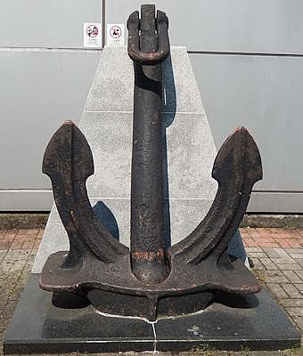
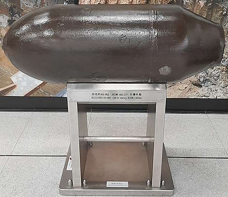

Sources for this page
- Environmental Resources Management, originally in Y2017-M06, revised in Y2021-M06 | Shatin to Central Link - Tai Wai and Hung Hom Section Works Contract 1109 - Stations and Tunnels of Kowloon City Section: Archaeological Excavation Report for Sacred Hill Area (Phases 1 to 3 Archaeological Works) Volume 1 - Sections 1 to 3 | https://www.amo.gov.hk/filemanager/amo/common/form/SCL_final_report_Jun2021.pdf
- 重庆中国三峡博物馆 | 宋龙泉瓷骰 | https://www.3gmuseum.cn/web/article/1432500292468711424/web/content_1432500292468711424.html
The Song-Yuan Dynasty dice displayed at Sung Wong Toi MTR Station
So, many artefacts had been unearthed during the construction of the Tuen Ma Line part of the Shatin to Central Link, and some artefacts are displayed at the completed Sung Wong Toi station. Among all the fascinating items including bowls, plates, and coins, there are also some...peculiar items. A good example is this 0.8 gram pottery dice, which got the artefacts code KSWT2013 A-TP20 (3a) SF# 9. At Sung Wong Toi MTR Station's artefact display, it is simply referred to as "Dice".
 |
| Sung Wong Toi station dice display |
| Sung Wong Toi station concourse level |
| Photo taken in Y2026-M08 |
The description of it at the artefact display is quite short. Here is what we know:
- not perfectly regular in shape
- only two patterns of pips on the dice's six faces: three faces have one dot and the other three have four dots
- could have been used for gaming but the exact use is unknown
The "other" Song Dynasty dice
Apparently, there is a similar looking porcelain dice dated from Song Dynasty being part of the collection of the Three Gorges Museum in Chongqing, mainland China. It is unclear if it also has three faces of one dot and three faces of four dots, as the only photo I managed to find only showed three faces of the dice, two of which has four dots and the remaining one has one dot. At least we can say people in the Song Dynasty seem to like having dice with more than one face having four dots.
Other things the railway dug up during construction of stations that were later put on display
When land was reclaimed for the construction of Tsuen Wan West station, an anchor was discovered and had been displayed outside Tsuen Wan West station exit D to this day.
And of course, when it comes to things dug up during construction of the Shatin to Central Link projects, we can't forget about the World War 2 era bombs found at Exhibition Centre station.
 |
| Tsuen Wan West station anchor display |
| next to Tsuen Wan West station exit D |
| Photo taken in Y2026-M09 |
 |
| Exhibition Centre station bomb shell display |
| Exhibition Centre station platform 1 |
| Photo taken in Y2022-M06 |
Reports about other findings at Sung Wong Toi station
The Antiquities and Monuments Office has a page dedicated to the hosting of reports related to archaeological at Sung Wong Toi station. I only referred to one of them for the purpose of understanding the dice, but you can check those reports if you are interested in knowing other artefacts. https://www.amo.gov.hk/en/archaeology/recent-archaeology/scl/scl-reports/